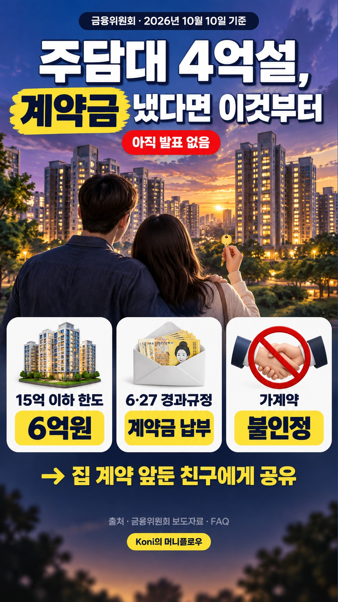
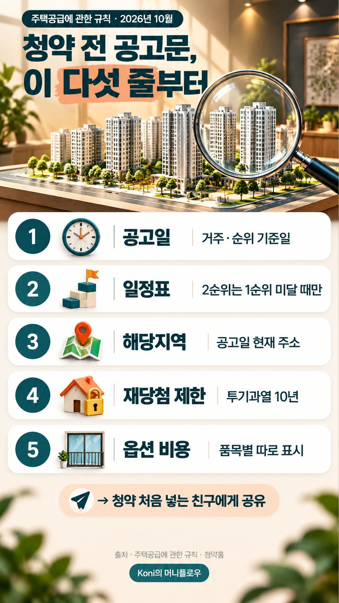
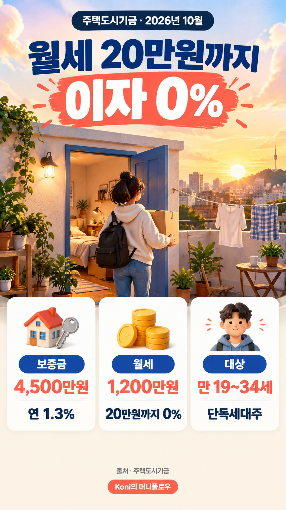
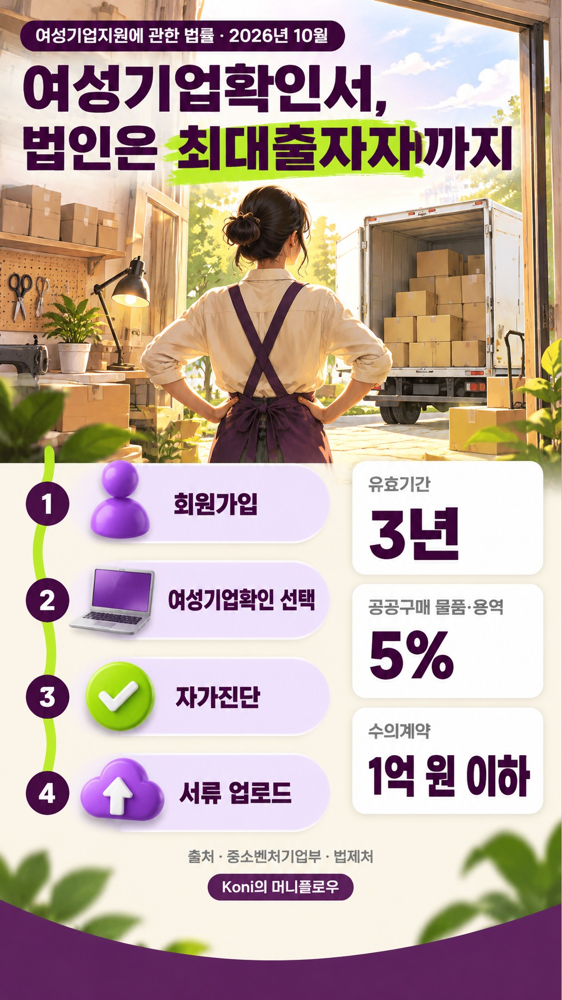
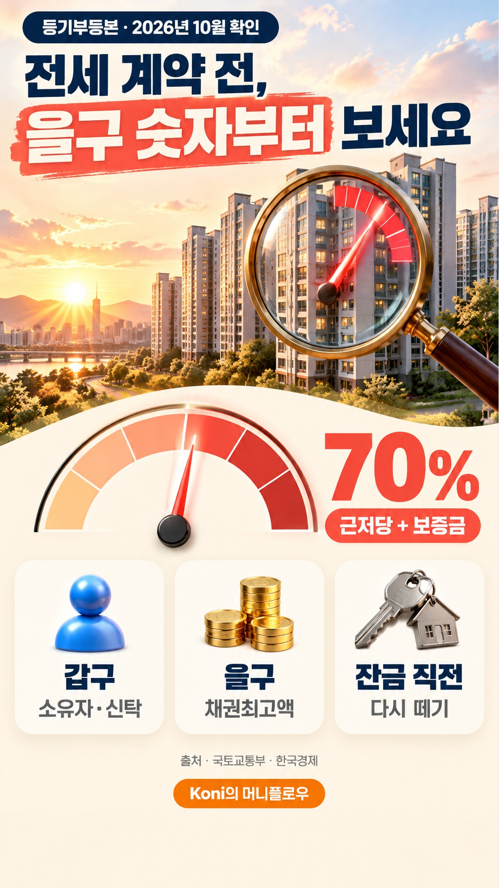
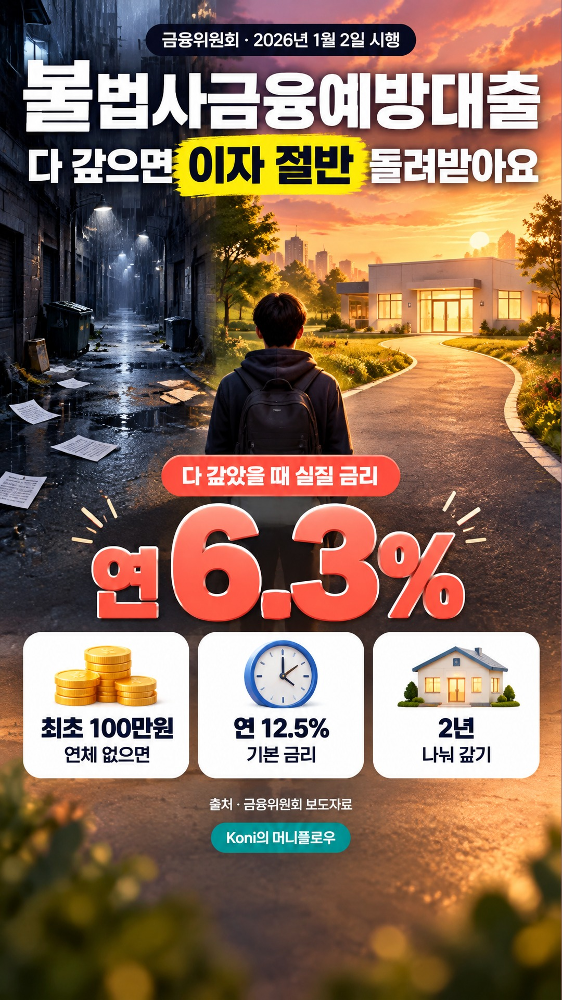
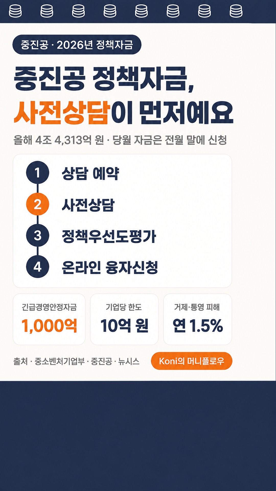

릴스 올릴 것
새 글이 발행될 때마다 맨 위에 쌓여요. 이미지 저장 → 인스타 앱 + → 릴스에서 그 사진을 고르고 트렌드 음악을 붙인 뒤, 캡션 복사해서 붙여 넣으면 끝.
10월 10일 11:51
주담대 한도 4억설, 계약금 냈다면 이것부터 확인하세요


캡션 보기
주담대 한도 4억 축소설, 계약금 보낸 분이라면 놀라셨죠. 2026년 10월 10일 기준 금융위원회 발표는 없어요. 6·27 때는 시행일 전 매매계약을 맺고 계약금을 낸 경우 옛 기준이 적용됐어요. 가계약은 인정되지 않았으니 계약금 이체 내역을 꼭 챙겨 두세요. 집 계약 앞둔 친구에게 보내 주세요. 자세한 내용은 프로필 링크 블로그에서 확인하세요. #주담대한도 #주택담보대출 #대출규제 #경과규정 #내집마련
10월 10일 06:38
판판대로 처음이라면, 공고 뜨기 전에 이것부터

캡션 보기
판로지원 공고 뜨고 나서 서류 찾다가 마감 놓친 적 있나요? 판판대로는 중기부 판로지원사업을 신청하는 누리집이에요. 올해 소상공인 온라인판로 1차 모집엔 약 3주 동안 1만2천여 곳이 몰렸어요. 10월 9일 현재 보도된 올해 모집은 모두 마감됐어요. 저장해 둘 한 줄: 중소기업확인서는 중소기업현황정보시스템에서 미리 받아 두세요. 온라인 판매 시작한 친구에게 보내 주세요. 자세한 내용은 프로필 링크 블로그에서 확인하세요. #판판대로 #판로지원사업 #소상공인지원사업 #중소기업확인서 #온라인판로
10월 9일 21:30
공고문 안 보고 청약하면, 당첨돼도 취소될 수 있어요


캡션 보기
공고문 안 보고 청약하면 당첨돼도 취소될 수 있어요. 해당지역은 최초 입주자모집공고일 현재 주소로 따져요. 투기과열지구 주택에 당첨되면 재당첨 제한이 10년이에요. 발코니 확장 같은 옵션 비용은 분양가와 따로 표시돼요. 공고문 볼 때 공고일·일정표·해당지역·규제·옵션 순서로 챙기세요. 자세한 내용은 프로필 링크 블로그에서 확인하세요. 청약 처음 넣는 친구에게 보내 주세요 #공고문 #아파트청약방법 #입주자모집공고 #청약홈 #내집마련
10월 9일 19:24
월세보증금대출, 청년은 월세 20만원까지 이자 0%


캡션 보기
월세 이자를 0%로 빌릴 수 있는 기금 상품이 있어요. 청년전용 보증부월세대출은 만 19~34세 무주택 단독세대주가 대상이에요. 월세는 20만원까지 연 0%, 보증금은 연 1.3%로 안내돼 있어요. 신청은 잔금일·전입일 중 빠른 날부터 3개월 안에 해야 해요. 자세한 내용은 프로필 링크 블로그에서 확인하세요. #월세보증금대출 #청년월세대출 #주택도시기금 #보증부월세대출 #자취방구하기
10월 9일 16:50
여성기업확인서, 대표만 여성이면 안 나와요


캡션 보기
대표가 여성이어도 여성기업확인서가 안 나올 수 있어요. 법인은 여성 대표가 최대출자자여야 해요. 신청은 공공구매종합정보망에서 하고 유효기간은 3년이에요. 법인은 주주명부와 주식 등 지분관계도를 꼭 챙기세요. 자세한 내용은 프로필 링크 블로그에서 확인하세요. #여성기업확인서 #여성기업 #공공구매종합정보망 #공공조달 #여성창업
10월 9일 14:35
옥정중앙역 디에트르Ⅱ, 당첨돼도 무주택? 세금은 달라요

캡션 보기
통장 없이 넣는 오피스텔, 당첨되면 무주택이 깨질까요? 옥정중앙역 디에트르Ⅱ는 10월 19~20일 청약홈에서 접수해요. 만 19세 이상이면 통장 없이 군별 1건, 최대 4건까지 넣을 수 있어요. 아파트 청약에선 오피스텔을 주택으로 안 보지만, 취득세에선 주거용이면 주택 수에 들어가요. 저장해 둘 한 줄: 통장이 없으면 공동인증서나 금융인증서를 미리 준비하세요. 자세한 내용은 프로필 링크 블로그에서 확인하세요. #옥정중앙역디에트르Ⅱ #오피스텔청약 #옥정신도시 #청약홈 #내집마련
10월 9일 09:00
전세 등기부등본, 을구 이 숫자 모르면 보증금 위험해요


캡션 보기
전세 계약 전, 시세보다 등기부등본이 먼저예요. 을구의 채권최고액과 내 보증금을 더해 매매 시세의 70%를 넘는지 보세요. 갑구에 '신탁'이 보이면 신탁원부를 따로 떼야 해요. 잔금 직전에 등기부를 한 번 더 떼는 것도 잊지 마세요. 자세한 내용은 프로필 링크 블로그에서 확인하세요. #등기부등본 #전세계약 #채권최고액 #깡통전세 #내집마련
10월 8일 23:55
서민금융 100만원, 다 갚으면 이자 절반 돌려받아요


캡션 보기
일이 끊겼는데 100만원이 급하다면 대부업 문자보다 서민금융부터 보세요. 불법사금융예방대출은 연체가 없으면 소득이 없어도 최초 100만원까지 빌릴 수 있어요. 2026년 1월 2일부터 다 갚으면 낸 이자의 50%를 돌려받아 실질 금리가 연 6.3%예요. 신청은 서민금융통합지원센터 예약 후 방문, 예약은 서민금융콜센터 1397이에요. 저장해 둘 한 줄: 대부업체는 '불법사금융 지킴이'에서 등록번호부터 조회하세요. 자세한 내용은 프로필 링크 블로그에서 확인하세요. #서민금융 #불법사금융예방대출 #햇살론특례보증 #소액생계비대출 #정부지원금
10월 8일 22:21
중진공 정책자금, 신청서보다 사전상담이 먼저예요


캡션 보기
중진공 정책자금은 신청서보다 사전상담이 먼저예요. 상담 예약 → 사전상담 → 정책우선도평가 → 융자신청 순서로 가요. 당월 자금이 필요하면 전월 말에 신청해야 해요. 10월 6일에는 긴급경영안정자금 1,000억 원이 새로 편성됐어요. 자세한 내용은 프로필 링크 블로그에서 확인하세요. #중진공정책자금 #중소기업정책자금 #정책자금 #중진공 #긴급경영안정자금